In this article, we're going to look at firewall logs. Think of a firewall like a security guard at the door of a network, keeping track of every conversation that enters or leaves. Every time a computer inside the network talks to a computer on the outside, the firewall writes down a little note: who talked, when, where they went, and how long they talked.
Our job is to install two special tools that help us read those notes, and then analyze what happened in a real network, essentially following the digital breadcrumbs.
What Are We Actually Doing?
We have a set of logs from a Cisco ASA firewall (a very common type of corporate firewall). These logs are stored in a special format called NetFlow NSEL. To read them, we need two tools:
1. nfdump: a tool that reads and summarises flow records (those little notes the firewall writes).
2. Argus: another tool that does similar things but from a slightly different angle.
The catch? The version of nfdump we need isn't the standard one. It's a custom version called nfdump-1.5.8-NSEL, and we have to compile it ourselves (like baking a cake from scratch instead of buying it pre-made).
Step 1: Setting Up the Playground
We started by creating an isolated environment inside a VirtualBox, remember we don't want anything actually touching the real world. Hopefully you read the DISCLAIMER before opening the projects. We then run Kali Linux (an operating system like Windows but this one is a special one used for security and forensics work). Think of it like a detective's toolkit pre-installed on a laptop.
Inside Kali, we created a folder on the desktop to keep all our files organised. This is where the firewall logs and tools would live.
Step 2: Getting the First Tool (nfdump)
The first tool we needed is called nfdump. It's like a pair of glasses that lets you read firewall logs in a human-friendly way.
But here's the catch: the normal version of nfdump doesn't understand the specific log format used by Cisco ASA firewalls (called NSEL). So we needed a special custom version: nfdump-1.5.8-NSEL.
We downloaded it from the internet (from a website called SourceForge), then extracted the files — like unzipping a folder.
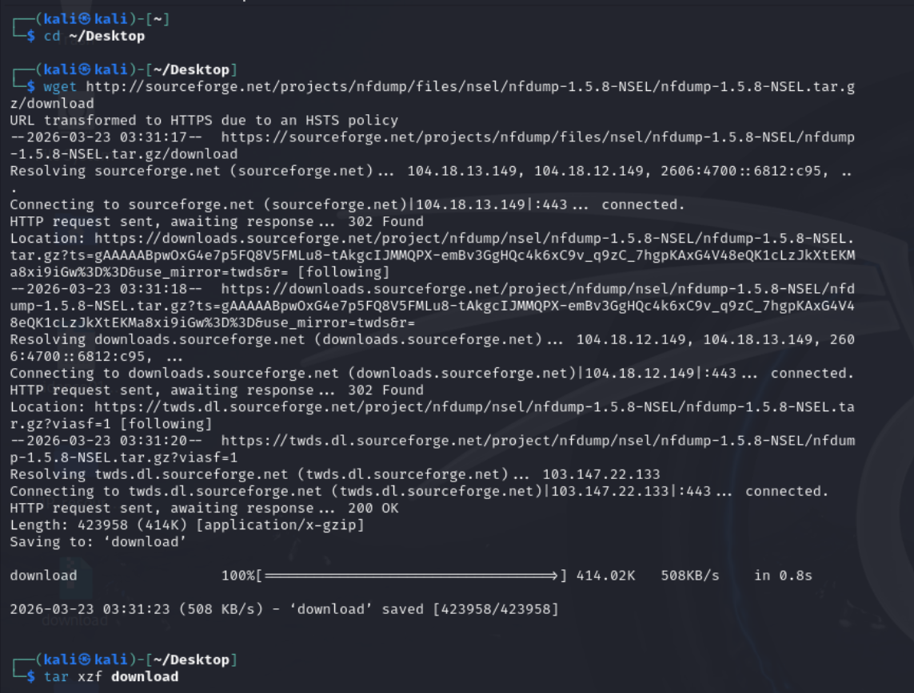
Step 3: Swapping in Some Modified Files
The custom version we downloaded wasn't quite ready to use. The task gave us a set of replacement files (with names ending in .c and .h — these are source code files). We copied these into the nfdump folder, overwriting the old ones.
Why? Because the original files had tiny errors that would cause the compilation to fail. Swapping them fixed those errors in advance.
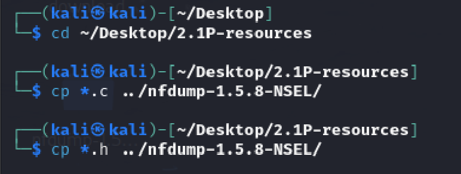
Step 4: Installing the Ingredients (Dependencies)
Before we could cook (compile) the tool, we needed to install some ingredients — the technical term for these is dependencies. These are small helper libraries that nfdump relies on to function properly.
We installed:
1. bison and flex — tools for reading configuration files.
2. rrdtool and librrd-dev — for working with time-based data.
3. libreadline-dev — for handling text input in the terminal.
Most of these were already on our Kali system, so we just checked they were up to date.
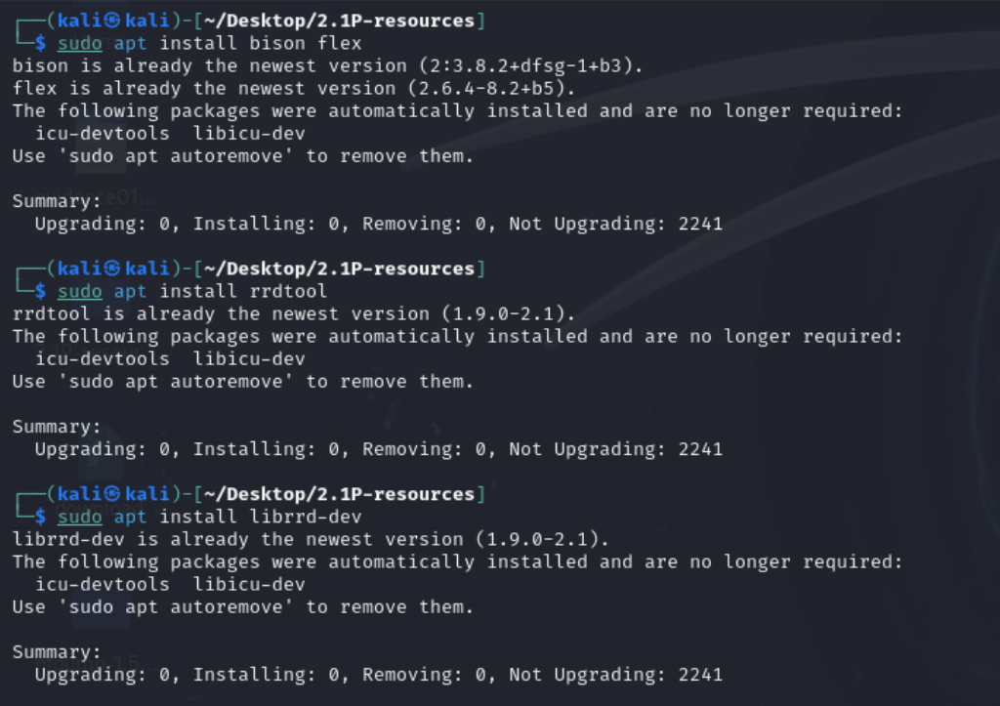
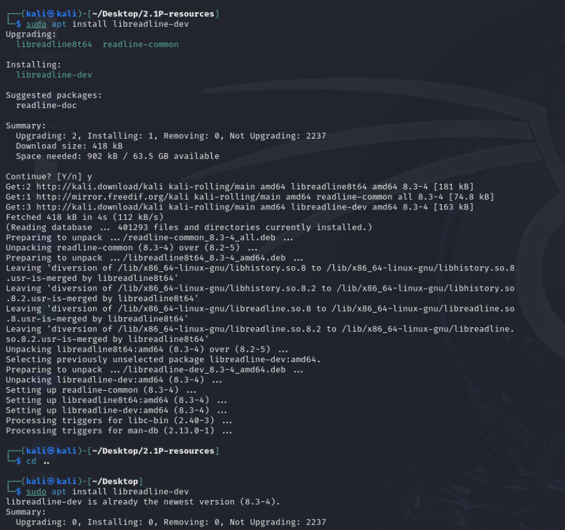
Step 5: Getting the Second Tool (Argus)
The second tool we needed is called Argus. It does something similar to nfdump but from a different angle — it generates audit records of network activity, giving us another perspective on the same firewall data.
We downloaded Argus directly from GitHub (a website where developers share code), then ran its setup script. This also required the libreadline-dev ingredient we installed in the previous step.
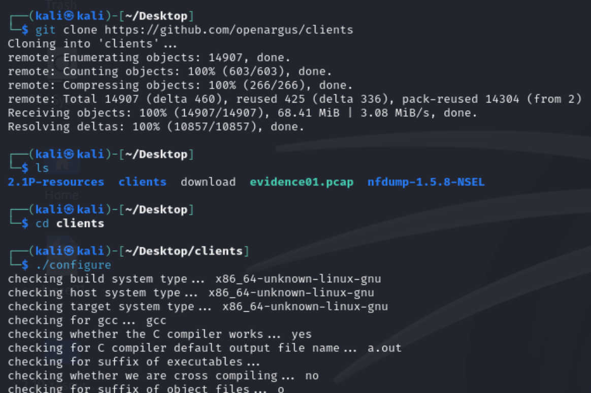
Step 6: Compiling and Installing nfdump
Now came the tricky part: compiling nfdump. Compiling means turning the human-readable source code into a program the computer can actually run. Think of it like translating a recipe written in French into English before you can cook it.
We ran three commands in sequence:
1. ./configure — this checked that all ingredients were present.
2. make — this did the actual compilation.
3. sudo make install — this placed the finished program into the system so we could run it from anywhere.
The compilation produced some warnings (like a chef saying "this might not be perfect"), but no fatal errors. It worked.
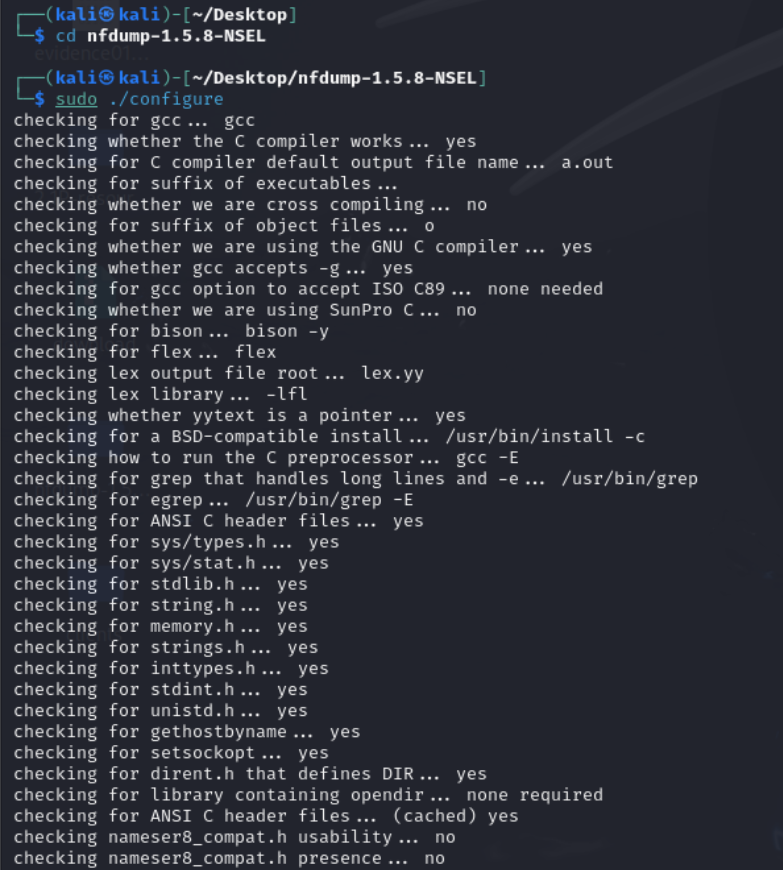
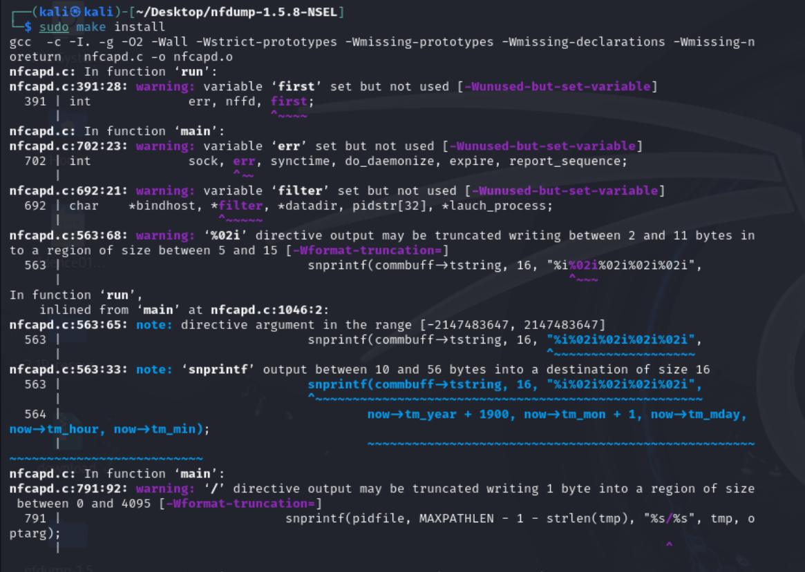
Step 7: Fixing Problems Along the Way
Nothing in forensics goes perfectly the first time. We hit a few bumps along the road.
Problem 1: The system had automatically installed a newer version of nfdump (1.7.6) without asking us. This conflicted with our custom version.
Fix: We removed the auto-installed version using sudo apt remove nfdump, then compiled our custom version manually.
Problem 2: During compilation, the computer complained about missing const keywords in two files: profile.c (line 388) and nsel_rrd.c (four places). A const is a tiny word in the C programming language that tells the computer "this value won't change."
Fix: We opened each file with a text editor and added the word const at the start of those lines. Saved. Recompiled.
Problem 3: Argus failed to configure because it was missing libreadline-dev.
Fix: We installed it with sudo apt install libreadline-dev, then ran Argus's setup again.
Step 8: Verifying Everything Worked
We checked that both tools were installed correctly by asking each one to report its version number — a quick and reliable way to confirm a successful installation.
1. nfdump -V showed version 1.5.8-NSEL — success.
2. ra -h (the Argus command) showed help information for version 5.0.3 — success.
Both tools were in place and ready to go.
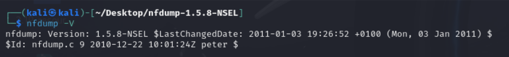
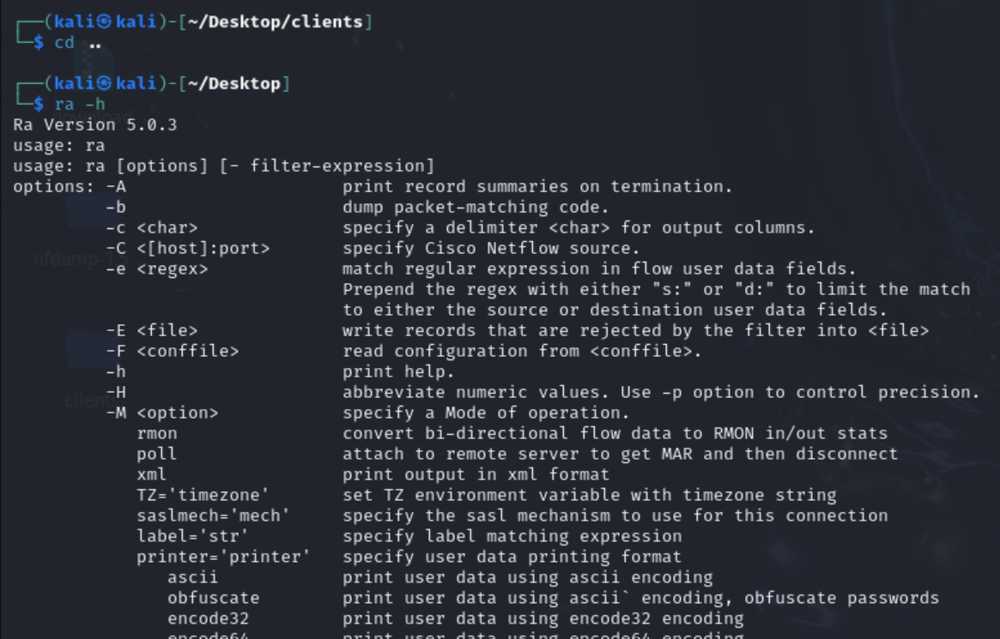
Step 9: Reading the Firewall Logs
Finally, we pointed nfdump at the Cisco ASA log folder using the command nfdump -R cisco-asa-nfcapd/. The tool printed out a list of network flows — each line representing one conversation between two computers.
We saw:
1. Timestamps — when each conversation happened.
2. Protocols — mostly UDP traffic.
3. Ports — port 53, which means DNS traffic (the internet's phonebook system).
4. Source and destination IP addresses — who was talking to whom.
5. Event types — CREATE (conversation started) and DELETE (conversation ended).
6. Byte counts — how much data was sent in each conversation.
The summary at the bottom showed 14,093 flows over about 26 minutes, totalling 14.3 MB of data.
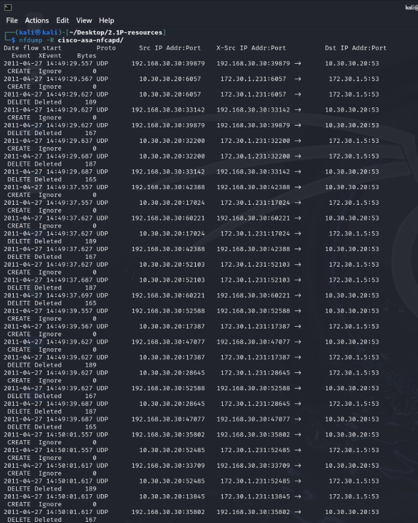
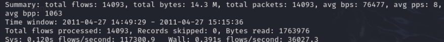
Step 10: What We Learned From the Logs
Most of the traffic was DNS lookups — the internet's phonebook system that translates website names (like google.com) into IP addresses that computers can actually connect to. Each lookup created a very short conversation: CREATE followed almost immediately by DELETE.
The high number of flows (over 14,000 in just 26 minutes) suggests a lot of automated DNS activity — possibly normal background traffic, possibly something more suspicious. In a real investigation, that kind of volume would be a clue worth digging into further. It's one of those things that doesn't scream "problem" immediately, but raises enough of an eyebrow to warrant a second look.
That's exactly what digital forensics is: following the breadcrumbs, one log line at a time.